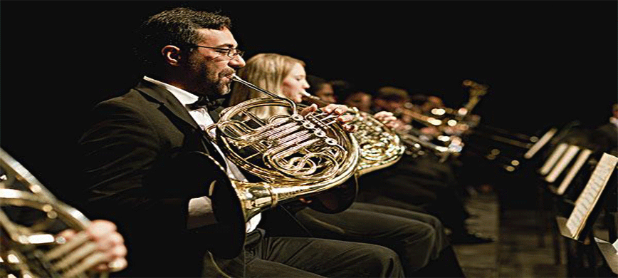

马克西姆伦敦个人演奏会

发布会现场，马克西姆为现场的媒体和粉丝演奏了2首经典曲目。区别于以往演出，此次在北京人民大会堂的演出，是马克西姆极为看重的一场，在跨界形式上，他又一次带来了突破创新，彰显他在跨界演奏领域的大师级地位。除了在古典钢琴演奏中加入电声乐队、弦乐队、歌手等元素外，不同以往，北京站将看到他为中国特意融入的惊喜中国元素，中国风的跨界演出，将为北京站带来更为震撼的视听盛宴。“除了新专辑中的曲目，其他乐迷们比较喜闻乐见、耳熟能详的曲目，比如像《克罗地亚狂想曲》、《出埃及记》这些名曲，我会用全新的方式给它们重新做混音，又有新的节奏呈现给大家。”
2016-10-19 15:20:45